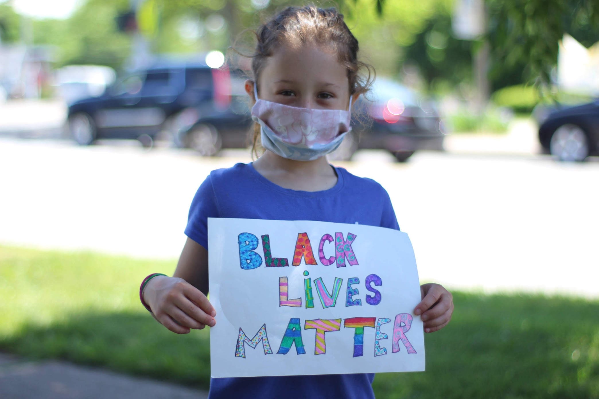
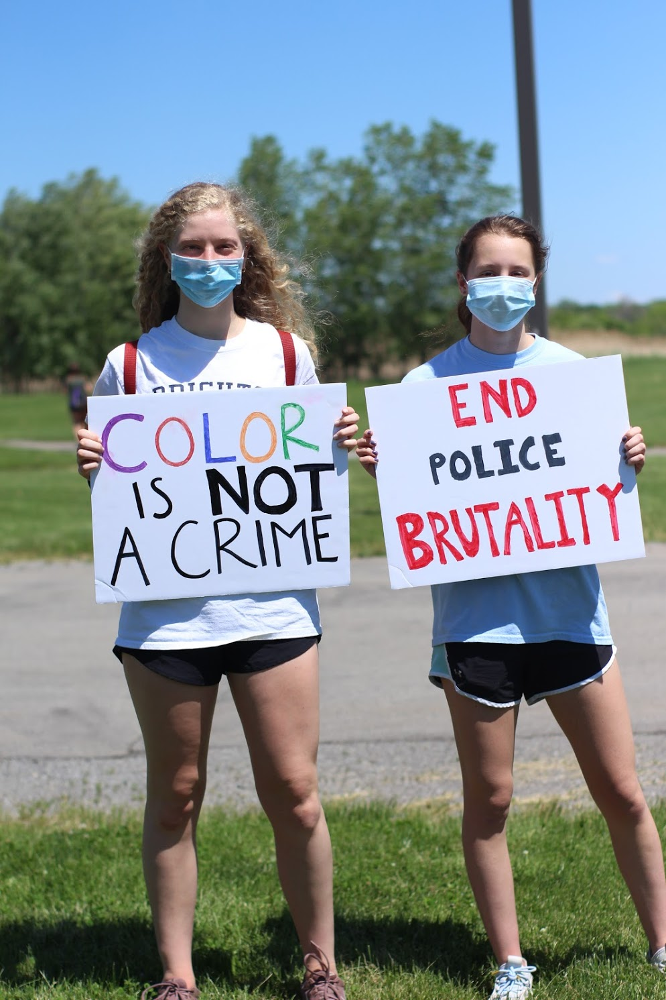

Current Events & Activism

WriteRochester fully supports and stands by the Black Lives Matter movement.
As a student-led writing organization, we are advocating for increased opportunities for America's next generation. Rochester's proposed budget includes over $95 million for the Rochester Police department, while youth services, recreation, and public libraries would receive less than $25 million combined. Police accounts for nearly 20% of the entire Rochester budget. This takes funding away from education and public services, directly hurting RCSD.
WriteRochester supports the movement to defund the police department to promote peace and opportunities. We'd like to recognize and mourn for the names of black victims of police brutality such as: George Floyd, Ahmaud Arbery, Breonna Taylor, Trayvon Martin, Tamir Rice, Michael Brown, and countless others who lost their lives as a result of police brutality.
If you would like to write a letter of condolences to a victim's family, send it to us via email and we can distribute it for you. WriteRochester encourages its members and surrounding community to use their voices! Sign petitions, write to your elected officials, and use every possible platform to voice your support of the Black Lives Matter movement. If you choose to express your opinions through writing, feel free to send it to writerochester@gmail.com and we would be happy to share it with the proper authority figures. For petitions to sign, places to donate, people to call and email, and more ways you can help, click the link below!